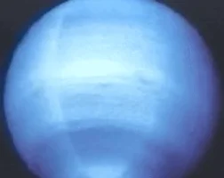

Neptunus

Neptunus de achtste en meest afgelegen grote planeet die om onze zon draait is donker,
koud en wordt opgezweept door supersonische winden.
Het was de eerste planeet die werd gelokaliseerd door middel van wiskundige berekeningen,
in plaats van door een telescoop.
GASACHTIG
De atmosfeer van Neptunus bestaat voornamelijk uit moleculaire waterstof, atomair helium en methaan.
vage RINGEN
Neptunus heeft minstens vijf hoofd ringen en nog vier ringbogen,
stof en puin dat waarschijnlijk is gevormd door de zwaartekracht
van een nabijgelegen maan.